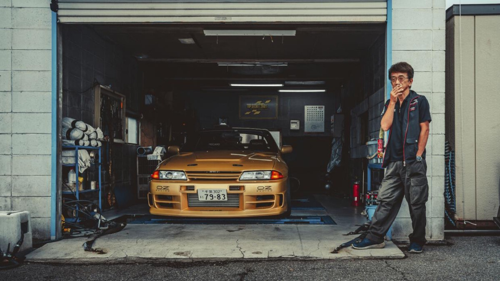
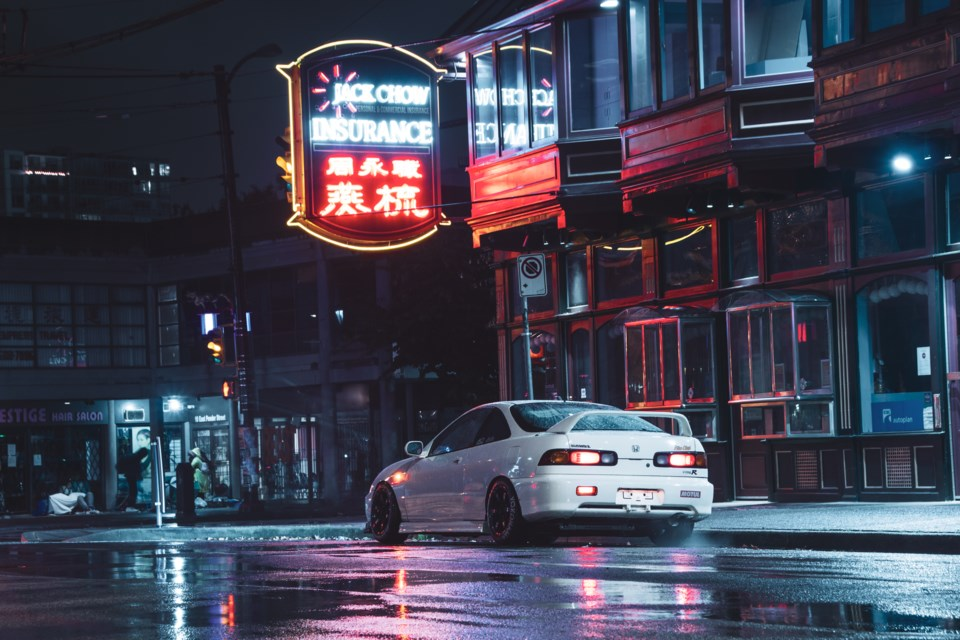

During the years following their post-World War II Allied occupation, Japan's automotive industry expanded explosively and saw them eventually grow into the world's largest vehicle production powerhouse, synonymous with quality and reliability.
As personal vehicles became cheaper and more accessible, they found their way more into the everyday lives of the Japanese population. Naturally from this came the rise of multiple subcultures revolving around their newfound mobility.
One of the most notorious of these are the Bosozoku, gangs of youths terrorising the streets with their cars and bikes as their way of rebelling against society. Their exploits of reckless driving, gang violence and generally disturbing the peace have been extensively documented throughout the years, and while we don't condone criminal activity, their style is undeniable and their culture continues to inform and influence fans to this day.
Another group from this era you might've come across before are Kaido racers. Inspired by 70s and 80s race cars, they're hard to miss with their ground-scraping ride height, tall extended exhaust pipes, huge overfenders with wide wheels to match and wild custom bodywork.
While there might be some crossover between these groups, they're not interchangeable and shouldn't be confused.
One of the many people who consider these times to be the golden age of Japan's automotive scene is Mitch Meade, an enthusiast of late Showa era (1926-1989) cars who has been documenting the scene since 2017 as the appropriately named Showa Racing.